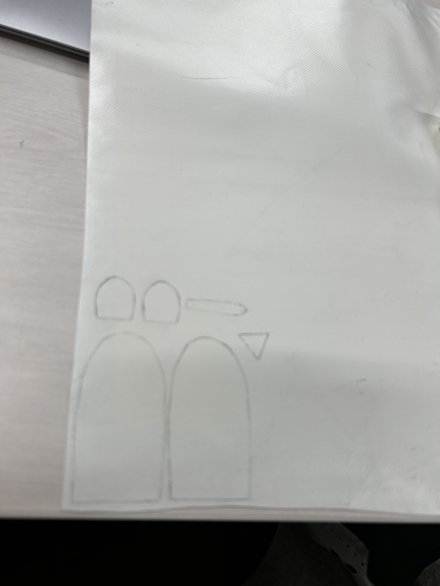

11月後半道用ゼミのまとめ
現在、元々提案していたフィンガー（指人形）を作る方針で現状動いている。
現状報告として、フェレットで作成されたネズミの指人形をベースにそれをターポリンに置き換えて作成を開始した。
その進捗を下記に記す。
とはいえ、現状報告できることは少なく。
やったことと言えばメンバーが型紙を製作してくれ、自分もターポリンを洗うなど。
意外とテープの汚れが気になってしまったのもあるが、今回切り取った部分のターポリンの汚れが無駄に気になってしまった。
と言うのも、今回は染色して製作をしていくことをあらかじめ決めていたためである。
今月最後のゼミの時間では型紙にシャーペンで線を、型紙に沿って描いて切り取る作業で終わってしまったが。
次回はもう少しターポリンから切り取るなどして染色に移り、終わらせる。
下記がその作業中に撮影をそれまで忘れてたが故に慌てて撮影したものである。
